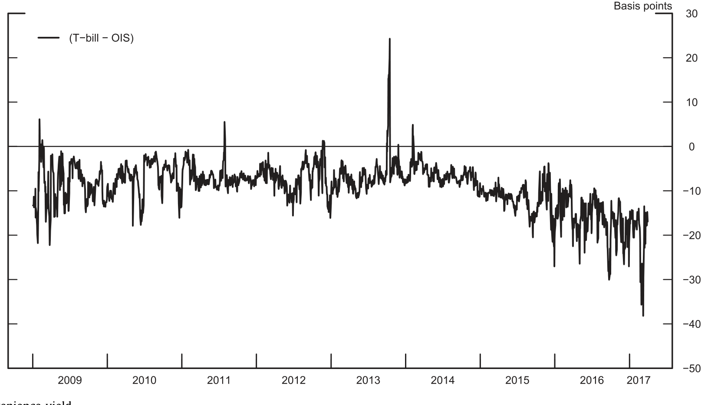
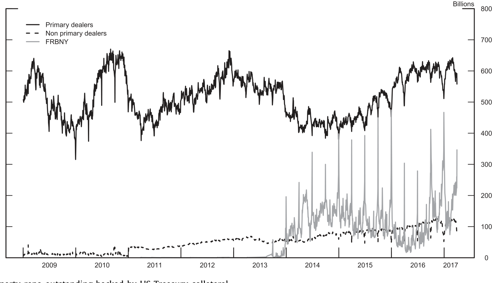
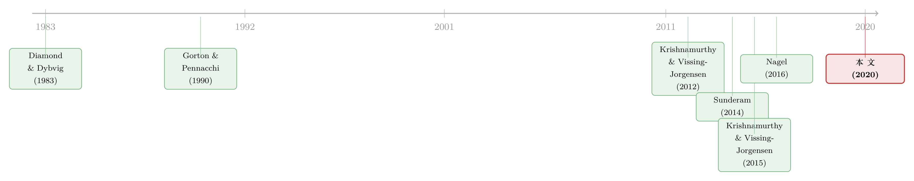

越是抢着要「安全」，私人货币反而退场
本文读的是 Infante (2020, Journal of Financial Economics)：以往文献都说「对安全资产的需求一上升，私人部门就会造出更多安全资产」；但作者把镜头对准以美国国债为抵押的回购市场，理论与实证都发现了相反的结果——需求一上升，私人回购反而收缩。关键就在于：抵押品本身已经是安全资产，需求上升会压扁国债的期限溢价，反而打掉了私人「造钱」的动力。
1 一个被普遍接受的故事，和它的裂缝
危机之后，关于影子银行的研究几乎收敛到了同一个直觉上：当经济体对安全资产 (safe assets) 的需求上升、而公共部门（政府）供给跟不上时，私人部门就会动手——用各种短期负债去填补这个缺口。Sunderam (2014) 给出了一个干净的证据：危机前，资产支持商业票据 (asset-backed commercial paper, ABCP) 的私人发行量，会随着安全资产需求的上升而上升。Krishnamurthy 和 Vissing-Jorgensen (2015) 则从反面印证了同一件事——安全、流动的政府债务会挤出金融部门的短期负债。
把这两个结果合起来，逻辑链条非常顺：需求来了，公共供给不够，私人短期债就补上。于是「私人安全资产创造」对需求是正向敏感的。这几乎成了影子银行扩张的标准解释。
可是，故事里有一道裂缝，而且裂得相当大。
作者把同样的问题，搬到了 2009–2017 年的美国国债三方回购 (tri-party repo) 市场上——这是经纪交易商向现金充裕的投资者借入短期资金的核心场所，借出的「货币」以美国国债为抵押。按上面的标准故事，安全资产需求上升时，这个市场里的私人回购也该扩张才对。
但数据说的恰恰相反：需求越旺，私人回购的存量越少。
2 真正关键的一步：抵押品自己就是安全资产
为什么会反过来？作者的回答，可以浓缩成一句话：ABCP 的抵押品不是安全资产，而国债回购的抵押品（国债）本身就是安全资产。 这一个差别，足以把敏感性的符号整个翻过来。
我们先把直觉理顺。安全资产之所以贵（收益率低），是因为它们除了风险/收益之外，还额外提供了一种便利收益 (convenience yield)——一种「货币服务」。短期安全资产（T-bill）几乎没有利率风险；而长期安全资产（国债）虽然到期几乎一定按面值偿付，却在短期内有利率风险，因此相对短期安全资产要打个折——这个折扣，就是期限溢价 (term premium)。
接着，一个自然的问题是：当大家对安全资产的需求 η 上升时，会发生什么？此时，长、短期安全资产之间那点「风险差异」就显得不那么重要了——边际上，投资者更在乎能不能消费到货币服务，而越来越不在乎那点利率风险。于是长期安全资产的期限溢价被压扁。
然后是反转。私人回购是怎么造出来的？银行（大型交易商）买入长期国债、再发行短期回购去融资——这本质上是一笔期限转换 (maturity transformation)，赚的就是期限溢价那块钱。期限溢价一旦被压扁，这笔生意就不划算了；而造回购本身是有成本的。于是银行减少回购存量，现金投资者转而直接持有公共安全资产，而不是去持有「拿公共安全资产做抵押造出来的私人安全资产」。
这就是全文的核心：这里发生的不是安全资产总量的增加，而是从私人安全资产向公共安全资产的替代 (substitution)。这跟 ABCP 那个故事完全不同——在 ABCP 里，抵押品（不是安全资产）让私人部门实现了「真正的安全资产创造」，安全资产总量上升；而在国债回购里，国债早已满足了安全资产需求，私人回购只是它的一层「转包」，需求一来，这层转包反而被抽掉。
一句话记住：私人安全资产创造的敏感性，取决于它的抵押品是不是安全资产。 抵押品越「不安全」，私人造钱越顺周期；抵押品越「安全」，私人造钱反而逆周期。
3 一个两期模型：把期限溢价写进 Euler 方程
作者用一个 Krishnamurthy–Vissing-Jorgensen (2015) 式的两期模型把这套直觉钉死。模型只有两期 \(t\in\{0,1\}\)，两类主体，两种证券外加一种合约。
主体。 家庭 (households) 风险厌恶、消费货币服务，可理解为货币基金、证券出借人、企业现金管理者这类现金投资者；银行 (banks) 风险中性、不消费货币服务，但拥有一项有成本的技术去生产抵押债务合约（即回购）。
资产。 一种叫 T-bill，在 \(t=1\) 支付 1，价格 \(p_T\)；一种叫 Treasury（长期国债），在 \(t=1\) 有随机支付 \(\tilde U\)（均值 \(U\)、正方差），价格 \(p_U\)——正是这个随机性，刻画了「长期安全资产短期内有利率风险」。银行发行的回购在 \(t=1\) 支付 1，价格 \(p_{RP}\)。
货币服务。 一个由 T-bill、国债、回购构成的组合 \((q^H_T, q^U_H, q^{RP})\) 提供的货币服务为
$$M = q^H_T + \alpha_U\,U\,q^U_H + \alpha_{RP}\,q^{RP}$$
这里有两个关键开关。\(\alpha_{RP}\) 被设为 1（回购与 T-bill 提供同等的货币服务，从而 \(R_T = R_{RP}\)）；而 \(\alpha_U \in \{0,1\}\) 则是全文的「分岔口」：\(\alpha_U = 1\) 时国债像 T-bill 一样提供货币服务（这是国债回购的主场景），\(\alpha_U = 0\) 时抵押品不提供货币服务（这正对应 ABCP 那类「真正的安全资产创造」）。
家庭效用。 给定两期消费计划，家庭最大化
$$U_H = u(c_0) + \beta\,\mathbb{E}\big(u(\tilde c_1 + v(M;\eta))\big)$$
其中 \(v(M;\eta)\) 是消费货币服务带来的额外效用，参数 \(\eta\) 用来调高/调低对货币服务的偏好（\(v_\eta, v'_\eta > 0\)）。两期消费分别是 \(c_0 = e - p_T q^H_T - p_U q^U_H - p_{RP} q^{RP}\) 与 \(\tilde c_1 = q^H_T + \tilde U q^U_H + q^{RP}\)。
把毛收益记为 \(R_T = 1/p_T\)、\(\tilde R = \tilde U/p_U\)、\(\mu = \mathbb{E}(\tilde R) = U/p_U\)、\(R_{RP} = 1/p_{RP}\)，家庭的一阶条件给出三条 Euler 方程：
$$\mathbb{E}(\tilde S)\,(1 + v'(M;\eta))\,R_T = 1$$
$$\mathbb{E}\big(\tilde S\,(\tilde R + \alpha_U\, v'(M;\eta)\,\mu)\big) = 1$$
$$\mathbb{E}(\tilde S)\,(1 + \alpha_{RP}\, v'(M;\eta))\,R_{RP} = 1$$
其中 \(\tilde S = \beta\,\dfrac{u'(\tilde c_1 + v(M))}{u'(c_0)}\) 是家庭的随机折现因子 (stochastic discount factor, SDF)。
3.1 把期限溢价从两条方程里解出来
真正点睛的一步，是把 T-bill 与国债这两条 Euler 方程并在一起。取 \(\alpha_U = 1\)（国债提供货币服务）。注意 \(M\) 在 \(t=0\) 选定组合后是确定的，于是 \(v'(M;\eta)\) 可以提到期望外。对国债方程做协方差分解 \(\mathbb{E}(\tilde S\tilde R) = \mathbb{E}(\tilde S)\mu + \operatorname{Cov}(\tilde S,\tilde R)\)，得到
$$\mathbb{E}(\tilde S)\,\mu\,(1 + v'(M;\eta)) + \operatorname{Cov}(\tilde S,\tilde R) = 1$$
再用 T-bill 方程把右边的 1 替换掉（\(1 = \mathbb{E}(\tilde S)(1+v'(M;\eta))R_T\)），整理即得期限溢价的表达式：
这条式子就是整篇文章的「发动机」。\(\mu - R_T\) 是长期安全资产相对短期安全资产的期限溢价：因为国债收益 \(\tilde R\) 带利率风险、与 SDF 负相关，\(-\operatorname{Cov}(\tilde S,\tilde R) > 0\)，所以期限溢价为正。而当对货币服务的偏好 \(\eta\) 上升，边际效用 \(v'(M;\eta)\) 随之变大，分母 \(\mathbb{E}(\tilde S)(1+v')\) 变大，期限溢价被压扁。
最后落到银行身上：银行靠「买长期国债、发短期回购」赚期限溢价，期限溢价一压，这笔期限转换的利润变薄；由于造回购有成本，银行就减少回购存量。这便从模型内部，给出了「需求上升 → 私人回购下降」的链条。
对照之下，把 \(\alpha_U\) 切到 0（抵押品不提供货币服务），需求上升反而拉大了「不提供货币服务的长期资产」与「提供货币服务的短期资产」之间的利差，银行有更强的动机去多发回购——于是又回到了文献里那个「正向敏感」的传统结论。同一个模型，靠 \(\alpha_U\) 一个开关，装下了两种相反的世界。
4 识别策略：拿 T-bill 发行量当工具变量
理论给了两个可检验的预言：私人回购对安全资产需求是负向的；对短期 T-bill 供给也是负向的（T-bill 多了，家庭的安全资产需求被满足，回购需求下降）；而对长期国债供给的效果符号不定（一方面满足需求压低回购，另一方面抬高期限溢价、需要更多回购去融资）。
怎么量「安全资产需求」？沿用文献做法，作者用便利收益来代理：四周期 T-bill 与一个月隔夜指数掉期 (overnight index swap, OIS) 之间的利差。T-bill 是公共生产的短期安全资产，OIS 只是一纸承诺无风险支付的合约，两者之差恰好量出了「持有安全资产的便利」。需求越旺，便利收益越大（如图 4）。

Figure 4: Convenience yield
但这里有个绕不开的内生性问题：便利收益与回购可能被同一批供给侧冲击同时推动。作者的解法很漂亮——用短期 T-bill 的发行量做工具变量。理由是：短期 T-bill 存量的变化可以解读为需求冲击（它改变了投资者消费货币服务的需求）；而它不太可能影响交易商的回购供给，因为短期 T-bill 收益率相对回购利率太低，拿 T-bill 做抵押去借回购是一笔负 carry 的买卖，交易商没有动机这么干。这就给了排他性约束一个站得住脚的经济理由。IV 的结果，确认了本文的主机制。
（这种「公共安全资产供给如何反推私人货币」的思路，和《无风险国债是「制造」出来的》、《利率长跌二十年，如何亲手喂大了影子银行》 是同一脉络上的不同侧面。）
5 数据与主要结果
样本是 2009–2017 年美国国债三方回购市场，主体分析在日频进行（因为回购期限大多短于一周，最有意义的敏感性应当落在短期；周频下结论依然成立）。
核心结果直截了当：随着便利收益上升（安全资产需求增强），私人回购的发行与存量都下降（如图 2）。而且，无论是加总层面，还是单个交易商层面，这个负向敏感性都成立。短期 T-bill 存量上升同样压低私人回购，与理论一致；长期国债存量与私人回购则呈正相关——对应理论里那条「融资需求渠道」占了上风的情形。作者进一步排除了「发行的直接/间接成本变化」「不同监管辖区」「不同回购期限」等供给侧的替代解释，结论稳健。

Figure 2: Total tri-party repo outstanding backed by US Treasury collateral
6 一个镜像：美联储的 RRP 为什么相反
文章里我最喜欢的，是它给出的一个镜像。美联储的逆回购 (reverse repurchase agreement, RRP) 项目，允许合格的非银机构把现金以回购形式存到美联储。作者发现，RRP 的使用量对安全资产需求的敏感性，符号和私人市场恰好相反——需求越旺，RRP 用得越多。
为什么？模型的扩展给出了答案：央行直接向家庭发行回购，它的回购不靠期限转换赚钱、因而对期限溢价不敏感。央行只是为了满足家庭对安全资产的需求而提供安全资产。于是当需求上升，私人市场因期限溢价压扁而退场，央行的 RRP 却顺势扩张去接住这部分需求。这意味着央行确实能绕开银行部门、直接向经济体供给安全资产——这一点呼应了 Nagel (2016) 关于银行部门「独有的准备金持有能力」造成市场分割的发现。
这个对照非常有说服力：同一个「安全资产需求上升」的冲击，私人回购和 RRP 走向相反，恰恰因为前者吃期限溢价、后者不吃。
7 文献脉络
把这条线索拉直来看，会更清楚本文站在哪里。
最上游，是传统银行学派对「私人短期债为何被创造」的解释——Diamond 和 Dybvig (1983)、Gorton 和 Pennacchi (1990)、Holmstrom 和 Tirole (1998)，无论动机是流动性风险分担还是缓解信息不对称，主题都是私人创造流动资产。
接着，安全资产/便利收益这条线浮现：Krishnamurthy 和 Vissing-Jorgensen (2012) 证明美国财政部因国债的安全资产地位而以更低收益率发债；Gorton、Lewellen 和 Metrick (2012) 发现过去 60 年美国安全资产占 GDP 的比重稳定，但其中由影子银行提供的份额在过去 30 年里持续上升。
然后是「需求驱动私人创造」的实证核心：Sunderam (2014) 用 ABCP，Krishnamurthy 和 Vissing-Jorgensen (2015) 用挤出效应，都指向正向敏感。Greenwood、Hanson 和 Stein (2015) 区分了「短期安全」与「长期安全」，Nagel (2016) 则把便利收益与利率水平、以及货币类资产间近乎为 1 的替代弹性钉了下来。

本文 (Infante, 2020) 的位置，就是在这条「正向敏感」的主线上插进一个限定条件：敏感性的符号，取决于私人安全资产的抵押品本身是不是安全资产。它没有推翻文献，而是把文献的结论收编进一个更一般的框架——\(\alpha_U\) 那个开关的两端。
8 评论与延伸（Q&A + 研究方向）
(a) 几个可能的疑问
Q：这跟 Krishnamurthy–Vissing-Jorgensen (2015) 的「挤出」是一回事吗？
不是。KVJ 讲的是公共安全资产供给增加，挤出私人短期债。本文讲的是对安全资产的需求变化：需求上升时，由于抵押品（国债）本身是安全资产，期限溢价被压扁，私人回购反而收缩。一个是供给侧挤出，一个是需求侧通过期限溢价的逆向反应，机制不同。
Q：既然国债已经满足了安全资产需求，为什么一开始还要有国债回购？
因为回购让一个更能承担风险的金融部门去持有利率风险、同时向其余经济体供给货币服务。长期安全资产短期内是有风险的，更适合风险中性的银行持有；而风险厌恶的家庭要消费货币服务。银行买国债、发回购，正好同时扮演了这两个角色，于是公共与私人两种安全资产在均衡里共存。
Q：把便利收益等同于「安全资产需求」，会不会把利率水平的影响也卷进来了？
这是个真问题。Nagel (2016) 已指出便利收益很大程度由利率水平（持币机会成本）决定。本文把便利收益的动态当作外生，只研究安全资产相对价值与持有量的变化，因此回避了「水平」之争；但作者也承认，利率水平在决定安全资产溢价上确实重要。
Q：用短期 T-bill 发行量当工具，排他性约束可信吗？
作者的论证是经济性的：短期 T-bill 收益率太低，拿它做抵押借回购是负 carry，交易商没动机这么做，因此 T-bill 发行量不太可能从供给侧直接搅动回购。这比纯统计论证更让人放心，但它依赖「负 carry 就不会发生」这个行为假设——在某些监管套利或抵押品稀缺的情形下，未必滴水不漏。
Q：货币基金这类投资者，真的会在长短期安全资产之间替代吗？
本文主机制依赖投资者在短期与长期安全资产间替代。货币基金因偏好短久期，这种替代有限；但证券出借人、企业现金管理者同时管理长短久期组合，正是会直接表现出这种替代的「理想投资者」，他们也确实活跃在三方回购市场里。
Q：那「衡量私人安全资产供给」该怎么做？
本文的政策含义是：不能简单地把所有私人短期负债加总。只有当背后抵押品本身不是安全资产时，金融机构才在做「真正的安全资产创造」；拿国债转包出来的回购，更多是公共安全资产的一层包装。
(b) 几个可能的研究问题与提案
1. 把同一框架搬到公司债回购 / 信用市场。 【经济故事】本文的精髓是「抵押品是否安全」决定符号。公司债、MBS 这类抵押品「不那么安全」，按 \(\alpha_U \to 0\) 的一端，私人回购对安全资产需求应当转回正向敏感。检验这一连续谱，能直接验证模型最锋利的预言。 【可行性】中。需要按抵押品类别拆分的回购数据（三方回购 + DTCC/GCF）、以及便利收益度量；识别可沿用本文 T-bill 工具的思路。难点在不同抵押品类别的需求冲击不易分离。
2. 外资持有人如何改变这条期限溢价渠道。 【经济故事】外国官方与私人投资者是美国国债的巨型边际买家，他们对安全资产的需求冲击未必通过国内回购市场传导。若外资需求主要压低国债期限溢价，按本文机制，应当同样抑制美国国内私人回购的发行。 【可行性】中。可用 TIC 数据与国债拍卖中的外资投标份额，结合便利收益做事件/IV 分析；与本研究者既有的外资—公司债流动性议程天然契合。
3. 把 SOFR 改革当作一次外生扰动。 【经济故事】基准从 LIBOR 切到 SOFR，重塑了回购利率与货币市场利率的关系。若便利收益与回购利率的联动被改写，本文的敏感性是否随之改变？这能检验机制对利率制度的稳健性。 【可行性】高。SOFR/回购利率数据公开，时间断点清晰；可做断点前后的对照。（相关讨论见《把「信用敏感」弄丢之后，借钱反而更便宜了——重读 SOFR 折价》。）
4. RRP 与私人回购的「跷跷板」有多大替代弹性？ 【经济故事】本文给出二者符号相反，但没量化替代的强度。当 RRP 余额在 2021–2023 年冲到数万亿美元，私人回购究竟被挤出了多少？这关系到央行直接供给安全资产对市场结构的长期影响。 【可行性】高。RRP 与三方回购余额均为高频公开数据；可用便利收益做共同驱动、估计两者对同一冲击的相对弹性。
评论与延伸：我的判断
本文最漂亮的地方，是用一个参数 \(\alpha_U\) 把两种看似矛盾的经验规律装进了同一个模型——文献的「正向敏感」与本文的「负向敏感」，不过是抵押品安全与否的两端。这种「不推翻、而是收编」的贡献，比单纯报告一个反常相关要扎实得多。RRP 的镜像证据更是锦上添花：它让「期限溢价是不是真机制」有了一个干净的反事实。
要说对识别的担忧，我有两点。其一，T-bill 工具的排他性建立在「负 carry 故交易商不为」的行为假设上，这在抵押品稀缺或监管套利活跃的时段未必成立，值得用季末、监管申报日等子样本去压力测试。其二，便利收益作为「需求」的代理，与利率水平纠缠在一起，本文把它当外生处理回避了争议，但 2009–2017 这个零利率为主的样本期相当特殊，若把样本延伸到 2022 年之后的加息周期，期限溢价的弹性会不会变号或变弱，是个真问题。
后续我最想看到的，是把这套「抵押品安全性决定符号」的逻辑做成一条连续谱：从国债、到机构 MBS、到公司债，私人回购的敏感性是否随抵押品安全性的下降而平滑地从负转正。那将是对本文核心机制最有力的一次外部检验。
参考文献
- Diamond, D.W., Dybvig, P.H. (1983). Bank runs, deposit insurance, and liquidity. Journal of Political Economy 91(3), 401–419.
- Gorton, G., Pennacchi, G. (1990). Financial intermediaries and liquidity creation. Journal of Finance 45(1), 49–71.
- Holmstrom, B., Tirole, J. (1998). Private and public supply of liquidity. Journal of Political Economy 106(1), 1–40.
- Krishnamurthy, A., Vissing-Jorgensen, A. (2012). The aggregate demand for Treasury debt. Journal of Political Economy 120(2), 233–267.
- Gorton, G., Lewellen, S., Metrick, A. (2012). The safe-asset share. American Economic Review 102(3), 101–106.
- Sunderam, A. (2014). Money creation and the shadow banking system. Review of Financial Studies 28(4), 939–977.
- Greenwood, R., Hanson, S.G., Stein, J.C. (2015). A comparative-advantage approach to government debt maturity. Journal of Finance 70(4), 1683–1722.
- Krishnamurthy, A., Vissing-Jorgensen, A. (2015). The impact of Treasury supply on financial sector lending and stability. Journal of Financial Economics 118(3), 571–600.
- Nagel, S. (2016). The liquidity premium of near-money assets. Quarterly Journal of Economics 131(4), 1927–1971.
- Infante, S. (2020). Private money creation with safe assets and term premia. Journal of Financial Economics 136(3), 828–856.